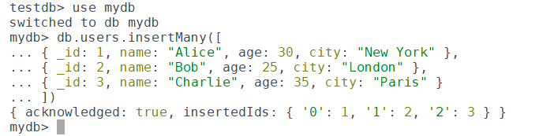
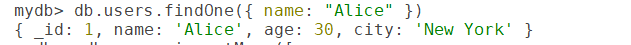
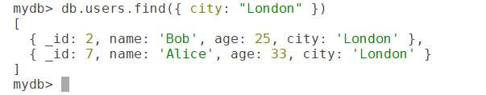
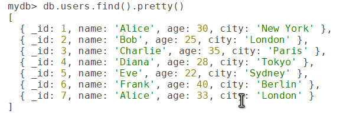
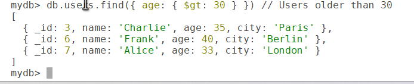
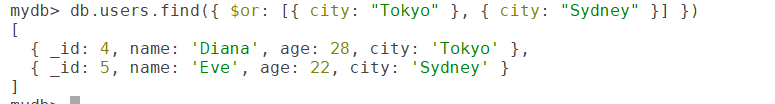
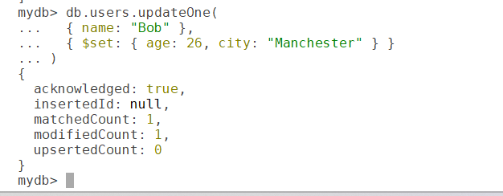

MongoDB, a popular NoSQL database, is known for its flexibility in handling unstructured or semi-structured data. At the heart of working with MongoDB collections are CRUD operations: Create, Read, Update and Delete. This post walks through each operation with examples and best practices to help you master data manipulation in MongoDB.
insertOne(), insertMany()findOne(), find()updateOne(), updateMany(), replaceOne()deleteOne(), deleteMany()These operations are fundamental to any database system, and MongoDB provides a straightforward, powerful syntax for them. Let's explore each one with examples in the MongoDB shell.
For the demonstration we'll use a users collection in a database named mydb. If you're following along, create the sample collection with a few documents:
use mydb
db.users.insertMany([
{ _id: 1, name: "Alice", age: 30, city: "New York" },
{ _id: 2, name: "Bob", age: 25, city: "London" },
{ _id: 3, name: "Charlie", age: 35, city: "Paris" }
])
Create operations add new documents to a collection, using insertOne() and insertMany().
db.users.insertOne({
_id: 4,
name: "Diana",
age: 28,
city: "Tokyo"
})Output: confirms the insertion with the document's _id.
db.users.insertMany([
{ _id: 5, name: "Eve", age: 22, city: "Sydney" },
{ _id: 6, name: "Frank", age: 40, city: "Berlin" }
])Output: returns the inserted _id values.
_id, MongoDB generates a unique ObjectId automatically.insertOne() for single insertions and insertMany() for bulk operations to optimize performance.Read operations retrieve documents with findOne() and find().
{ _id: 7, name: "Alice", age: 33, city: "London" } — that was added in my test collection. If you only ran the inserts above, you won't see it in your results.db.users.findOne({ name: "Alice" })
Output: the first matching document, e.g. { _id: 1, name: "Alice", age: 30, city: "New York" }.
db.users.find({ city: "London" })
Output: a cursor over all matching documents.
To make the output more readable, use pretty():
db.users.find().pretty()
mongosh shell, results are already formatted, so pretty() makes no visible difference. It mattered in the legacy mongo shell.MongoDB supports operators for more complex queries.
Comparison: $eq, $gt, $gte, $lt, $lte, $ne, $in
db.users.find({ age: { $gt: 30 } }) // Users older than 30
_id: 1 (age 30) is excluded — $gt is strictly greater than.Logical: $and, $or, $not, $nor
db.users.find({ $or: [{ city: "Tokyo" }, { city: "Sydney" }] })
findOne() for single-document retrieval and find() for multiple documents.name or city) improve read performance.Update operations modify existing documents using updateOne(), updateMany() or replaceOne().
db.users.updateOne(
{ name: "Bob" },
{ $set: { age: 26, city: "Manchester" } }
)
Output: the number of documents matched and modified.
db.users.updateMany(
{ city: "New York" },
{ $set: { country: "USA" } }
)To replace an entire document (everything except _id):
db.users.replaceOne(
{ name: "Diana" },
{ name: "Diana", age: 29, city: "Osaka", country: "Japan" }
)replaceOne(), any field you leave out of the new document is removed. Use $set when you only want to change some fields.| Operator | What it does | Example |
|---|---|---|
$set | Sets specific fields | { $set: { city: "Leeds" } } |
$inc | Increments a numeric field | { $inc: { age: 1 } } |
$push | Adds an element to an array | { $push: { hobbies: "reading" } } |
$set to avoid overwriting fields unintentionally.Delete operations remove documents using deleteOne() or deleteMany().
db.users.deleteOne({ name: "Frank" })Output: the number of documents deleted.
db.users.deleteMany({ city: "Paris" })deleteMany() can remove large numbers of documents — and deleteMany({}) removes every document in the collection.find() first to see exactly what will be deleted.db.users.createIndex({ name: 1 })insertMany() or updateMany() to reduce network overhead.matchedCount, modifiedCount) to confirm it did what you expected.explain() to analyze query performance and confirm indexes are used:
db.users.find({ city: "Tokyo" }).explain("executionStats")| Area | CRUD in practice |
|---|---|
| User management | Inserting user profiles, updating preferences, deleting inactive accounts |
| E-commerce | Adding products, querying inventory, updating prices, removing discontinued items |
| Real-time analytics | Storing and retrieving event data, updating counters, deleting expired logs |
| Content management | Managing blog posts or comments with flexible schemas |